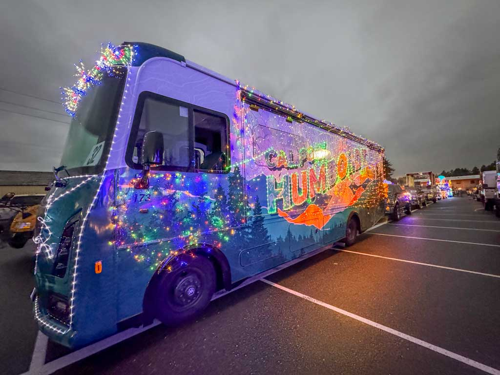

Holiday Cheer
Spreading the Cal Poly Humboldt Holiday Cheer
When the holidays arrive, the Mobile Alumni Center trades sunshine for twinkle lights and jingle bells. During the annual Humboldt Truckers Parade in Eureka, the vehicle transforms into a rolling holiday spectacle. Imagine festive decorations, cheerful faces, and just enough Humboldt magic to feel right at home.